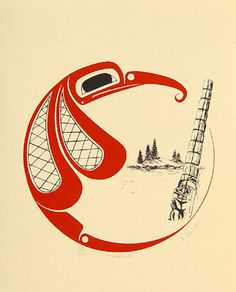
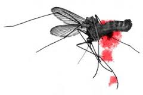
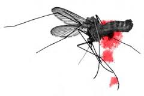

When Glooskap lived with his people it happened once that the tribes grew jealous of his power. This jealousy was not because of any evil in themselves; it was prompted by a wicked sorceress who during the absence of Glooskap prevailed upon the people to do him harm. Some said that the sorceress was angry because she had once loved Glooskap and he had refused to return her love; others said that she was much older than Glooskap, that before his birth she had herself ruled the earth for a long time, and that when Glooskap came he had put an end to her reign. The truth of the matter no man knows, but it is certain that she was very powerful and that she always watched for a chance to harm Glooskap.
Her chance came when Glooskap went for six weeks on a hunting trip far into the forest. She then told the people that he was neglecting them, and she soon persuaded them to pack up and leave him, for she believed that he would perish if he were left alone. When the people went away, they took with them Dame Bear, Glooskap's old grandmother, and his little brother, whom Glooskap had left behind. The band journeyed hastily across the land to the sea; then they sailed in their canoes to a great island, where they stopped and set up their tents. And the sorceress left the road they travelled well guarded by evil beasts and dragons who, she hoped, would kill Glooskap if he tried to follow them. She made Dame Bear and the little boy her slaves, and compelled them to do much hard work. She gave them but little food and but scanty clothing, so that they were soon very miserable.
When Glooskap came back to his home at the end of six weeks, he found that his people had disappeared. His friend Fox, who had watched slyly the people's departure and the wicked woman's tricks, told him all that had happened. Glooskap did not blame his people, for he knew that their going away had been brought about by his old enemy. But that he might teach his people the folly of their act,—for he knew that they would now be very hungry and poor,—he tarried alone in his home-land for many years before he set out to find them and to take vengeance on their wicked leader. Then, taking his magic belt and his two dogs, he set out upon his long journey. He went across the sea to another land, and then he travelled eastward, his dogs following close behind him. Here he was far from the road that his people had travelled, and there were no dragons to bar his progress.
Soon he came to a village where the people were friendly. He heard from an old man and woman about the road along which the sorceress and his own people had passed. The old man told him of the dragons ahead of him and of the evil, hideous creatures that had been left to guard the way. But Glooskap, unafraid, and trusting in his dogs and his magic belt, set out along the enchanted road. At last he came to a narrow pass in the hills watched over by two terrible dogs. He put his magic belt around the necks of his own dogs for a moment, and at once they grew to an immense size; and they easily killed the beasts of his enemy, and he passed on unharmed.
After some hours he came to a high hill. At
the bottom was a large tent in which he knew, from
the tale of the old man of the friendly village,
that a wicked man lived with his two beautiful
daughters. He knew too that they waited his coming,
for prompted by the sorceress they wished to kill
him. As he looked down from the top of the hill, he
saw the two daughters approaching afar off. They
were very beautiful and fair; but Glooskap
remembered the old man's warning and he resolved to
be on his guard. One of them carried in her hands a
string of costly beads. They met him with pleasant
smiles and invited him to the tent below the hill;
and they tried to place the beads about his neck to
show him their great love. But Glooskap knew that
the beads were enchanted, and that if he placed them
around his neck he should lose his strength and
power. So he set his dogs upon the girls, and the
dogs were so terrible because of his magic belt that
the girls ran away in great fear; as they ran, they
dropped the string of beads, without which they had
no power. Glooskap picked up the beads and then cautiously entered the tent of his enemies. On a couch of skins near the door the old man was dozing, and before he could rise, Glooskap placed the beads about his neck and killed him with a blow. Then he went on his way. He met with many enemies on this evil road, but by the aid of his dogs and his magic belt and the enchanted beads he overcame them all and was unharmed.
At last he reached the sea, and he looked over the dark water to another land and wondered how to get across. Finally, he sang the magic song that the whales always obeyed. Old Blob the whale came quickly to his call, and getting on her back he sailed away to the eastward. His two dogs swam close behind Old Blob. The whale soon brought him to the land where he knew that his people dwelt. He sprang ashore, his dogs following him, and set out with long rapid strides in search of his enemies. At the end of a few hours' journey he found traces of old camp-fires, and he knew that his people were not far away. At last he reached the place where they were living. In the distance he saw a camp, which because of his magic power he knew to be that of the sorceress. Near by was his little brother, whom the wicked sorceress had made her slave; he was pale and much worn, and he was clad only in rags; he was seeking wood for a fire and as he gathered up the dry sticks he cried, and sang a song of lament,—"Where is Glooskap, my big brother? Alas! he is far away, and I shall never see him again." Then Glooskap took pity on his little brother, and gave a signal that the little boy knew well. And his brother, turning around, spied Glooskap behind the trees afar off, and running to him cried out with joy, for he knew that help had at last come.
But Glooskap knew that to overcome his great enemy and to free his people, he must be very careful and use his craftiest tricks. He told his little brother to be silent, and to tell no one but Old Dame Bear, the grandmother, that he had come. He sent him back to his hard work in the camp, and promised that when the twilight came he should be freed. And he said, "Do what you can to make the wicked woman angry, for when anger comes to her, her power leaves her; when you are sent to rock her baby to sleep at twilight, snatch it from its cradle and throw it into the camp-fire. Then run to me where I hide here among the trees; take Dame Bear with you, and all will be well."
His little brother then went back to his
hard work in the woman's tent and told Dame Bear
what he had seen and heard. And the two waited
patiently for the twilight. At the sunset hour the
little boy, still supperless, was sent by the
sorceress to rock her baby to sleep. For the first
time in his long separation from his big brother he
worked with joy, and without hunger, for he knew
that he would soon be free. Suddenly he snatched
from the cradle-hammock the woman's baby,—a wicked child like her mother,—and hurled her into the camp-fire. Then, taking Dame Bear by the arm, he ran towards Glooskap's hiding place. The baby howled with pain and cursed loudly as she had heard her mother do, and rolled herself out of the fire. And the sorceress was very angry, and muttering dire threats she ran after the boy and Dame Bear. They soon reached Glooskap, who sprang from his hiding place, his magic belt around him. When the sorceress saw Glooskap, she was more angry than before, so that her strength left her and she was powerless. Yet she gave battle.
Glooskap tore up a huge pine tree from its roots and hurled it at his enemy. It entered her side and stuck there, and although she tried with all her might she could not draw it out. Glooskap could now have killed her with a blow, but he did not wish to do that. He wanted to let her live in misery, and to give her a greater punishment than death. And so, yelling with pain and shame, the sorceress ran back to her tent, while Glooskap took Dame Bear and his little brother to his own camp among the trees and gave them food. He knew now that the battle was over, for it had long been known that if the wicked woman's side was once pierced her power would never return.
When Glooskap's people heard that he had
come, they rejoiced greatly, for they were hungry
and cold. The sorceress had failed to provide food
for them, and they were tired of her wicked and cruel rule which was very unlike that of Glooskap. But Glooskap tarried before making friends again with them, and remained for many days in his own camp in the trees watching them from afar. His dogs guarded his grove and kept all away except Dame Bear and his little brother. Meanwhile, the wicked sorceress in pain with the pine tree in her side moved about in great anger, but as her power was now gone, the people refused longer to obey her. And they all laughed at her because of the pine tree sticking in her side. At last, being very angry, she said, "I do not wish to live like this when my power is gone. All the people laugh at me because of the pine tree sticking in my side. I wish that I might change to something that would always be a plague and a torment to man, for I hate mankind." Glooskap heard her wish, although he was afar off, and with his magic power he changed her at once to a mosquito. Then he forgave his people, and as they were hungry he gave them much food and drink, for he had killed many moose in the land. And the people all rejoiced and promised never again to forsake him or to be jealous of his power.
Then Glooskap gathered his people on the
shore of the great ocean, and calling the whales,
his sea carriers, he bade them carry him and his
people from this land back to their old home. There
they settled down again in peace. But to this day
the wicked sorceress roams over the earth as a
mosquito; and the pine tree in her side is a sharp
sting. She is never at rest, but she shall always remain as she wished, a torment to mankind. The only thing on earth she dreads is fire and smoke, for she still remembers that the throwing of her baby into the fire long ago caused the outburst of anger that in the end deprived her of her strength. And by fire and smoke in the summer twilight men still drive her and her descendants from their dwellings.
 

Transcribed by Cyrus MacMillan, 1917. The writer's deepest thanks are expressed to the nameless Indians and "habitants," the fisherman and sailors, "the spinners and the knitters in the sun," from whose lips he heard these stories.
Back to Top